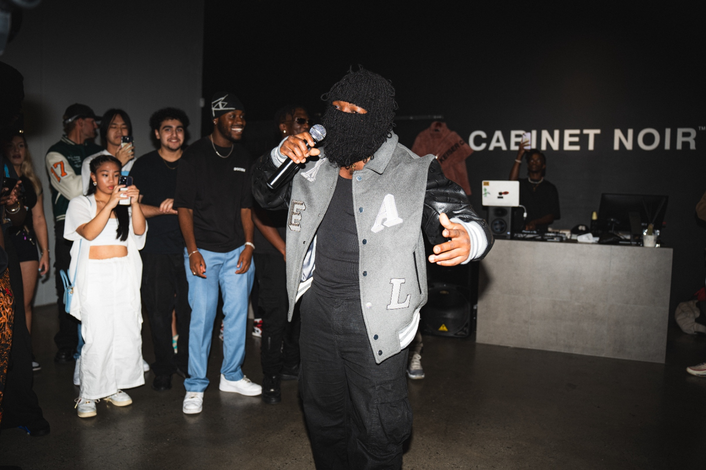
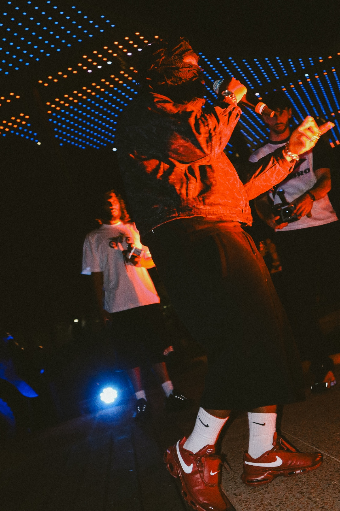

Latest drops
Tap into the newest CASTTRO tracks — straight from late‑night sessions to your feed.
Open channel →
Razor‑sharp bars, late‑night sessions, and a mask that reflects more than it hides. CASTTRO turns real stories into heavy, cinematic rap from the Perth underground.
CASTTRO is a Perth-based hip‑hop artist turning pressure into performance. The music sits somewhere between raw confession and calculated warfare — equal parts vulnerability and flex.
From house parties to underground rooms, CASTTRO has been sharpening the live set, building a reputation for intensity, presence, and crowd control.

Dark drums, cinematic samples, and hooks built to sit in your head. Every release is crafted to hit on headphones and hit harder on stage.
Tap into the newest CASTTRO tracks — straight from late‑night sessions to your feed.
Concept project loading — tighter writing, heavier beats, and a full story arc.
Alternate arrangements and transitions built specifically for stage energy.
Real rooms, real reactions. From small caps to full rooms, performances are where the music proves itself. Clips don’t just show the crowd — they show control.
The CASTTRO world is built on contrast — clean frames vs chaos, hard shadows vs neon red. Visuals turn every drop into a scene, not just a song.


Building from the ground up — underground rooms, word‑of‑mouth nights, and sets that leave people asking when the next one is.
Business only. Hit the email below for shows, features, or serious enquiries.
Email: castronx@gmail.com